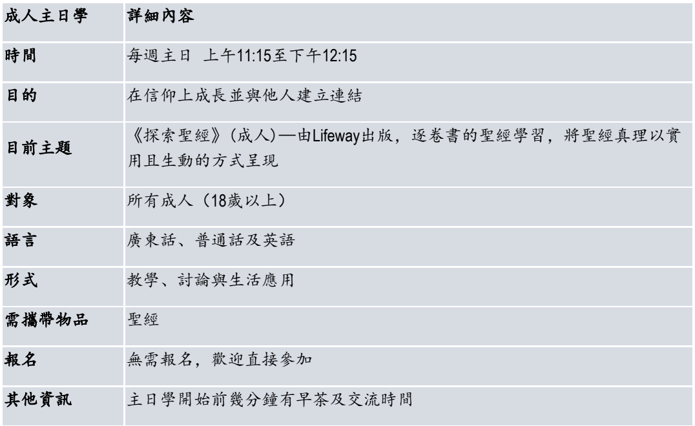
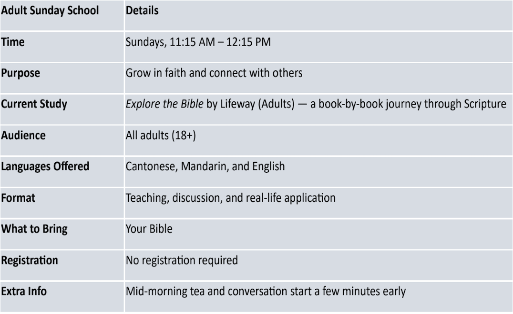

Overview
課程資訊 / Class Overview
中文
成人主日學每週主日上午 11:15 至下午 12:15 舉行，幫助弟兄姊妹在信仰上成長並與他人建立連結。
目前主題為《探索聖經》（成人）— 由 Lifeway 出版，逐卷書的聖經學習，將聖經真理以實用且生動的方式呈現。
English
Adult Sunday School meets every Sunday from 11:15 AM to 12:15 PM to help adults grow in faith and connect with others.
The current study is Explore the Bible by Lifeway (Adults), a book-by-book journey through Scripture presented in a practical and engaging way.
Details
詳細內容 / Details
時間 / Time
每週主日 上午11:15 至 下午12:15
Sundays, 11:15 AM - 12:15 PM
Sundays, 11:15 AM - 12:15 PM
對象 / Audience
所有成人（18歲以上）
All adults (18+)
All adults (18+)
語言 / Languages
廣東話、普通話及英語
Cantonese, Mandarin, and English
Cantonese, Mandarin, and English
形式 / Format
教學、討論與生活應用
Teaching, discussion, and real-life application
Teaching, discussion, and real-life application
需攜帶物品 / What To Bring
聖經
Your Bible
Your Bible
報名 / Registration
無需報名，歡迎直接參加
No registration required
No registration required
其他資訊 / Extra Info
主日學開始前幾分鐘有早茶及交流時間
Mid-morning tea and conversation start a few minutes early
Mid-morning tea and conversation start a few minutes early
Original Info
原始頁面內容 / Original Page Reference

